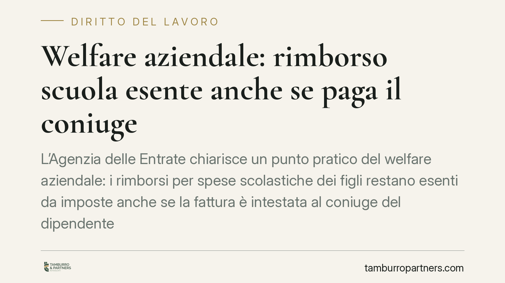

Welfare aziendale: rimborso scuola esente anche se paga il coniuge
L'Agenzia delle Entrate chiarisce un punto pratico del welfare aziendale: i rimborsi per spese scolastiche dei figli restano esenti da imposte anche se la fattura è intestata al coniuge del dipendente e da lui pagata. Un'apertura che allarga il perimetro applicativo dell'articolo 51 del TUIR e semplifica la gestione dei piani welfare per aziende e lavoratori.

Il chiarimento dell'Agenzia
L'Agenzia delle Entrate ha precisato che il rimborso erogato dal datore di lavoro per le spese di istruzione dei figli del dipendente conserva l'esenzione fiscale anche quando il pagamento della retta o della fattura scolastica è effettuato dal coniuge, e non direttamente dal lavoratore beneficiario del piano welfare.
È un'indicazione operativa rilevante, perché nella prassi molte famiglie sostengono queste spese in modo indistinto: chi paga materialmente non coincide sempre con chi ha diritto al rimborso aziendale. Fino a questo chiarimento, molti uffici del personale applicavano un criterio restrittivo, richiedendo l'intestazione dei documenti di spesa direttamente al dipendente.
Inquadramento normativo
Il riferimento è l'articolo 51, comma 2, lettera f-bis, del D.P.R. 917/1986 (Testo Unico delle Imposte sui Redditi, o TUIR). La norma esclude dalla formazione del reddito di lavoro dipendente le somme, i servizi e le prestazioni erogate dal datore di lavoro per la fruizione, da parte dei familiari indicati nell'articolo 12 del TUIR, di servizi di educazione e istruzione anche in età prescolare, compresi i servizi integrativi e di mensa, nonché per la frequenza di ludoteche e centri estivi e invernali e per borse di studio.
Il fulcro logico del ragionamento dell'Agenzia è che la norma guarda alla finalità della spesa - l'istruzione del familiare - e non all'identità di chi effettua materialmente il pagamento. Ciò che conta è che la spesa sia effettivamente sostenuta e riferibile al figlio fiscalmente a carico o rientrante tra i familiari dell'articolo 12 TUIR. La provvista finanziaria può quindi provenire dal coniuge senza far venire meno il regime di esenzione.
Implicazioni pratiche
Per il dipendente il beneficio è diretto: può accedere al rimborso welfare per le spese scolastiche dei figli anche se la retta è stata pagata dal partner, senza subire tassazione sull'importo. L'esenzione, ricordiamo, significa che la somma non concorre a formare il reddito imponibile ai fini IRPEF.
Per il datore di lavoro e per l'ufficio del personale si semplifica la fase di controllo documentale: non è più necessario respingere richieste solo perché la fattura risulta intestata al coniuge. Resta però fermo l'onere di verificare che la spesa sia reale, congrua e riconducibile a un familiare che rientra nel perimetro dell'articolo 12 TUIR.
Attenzione a un rischio da non sottovalutare: il chiarimento non autorizza duplicazioni. Se la stessa spesa scolastica viene rimborsata dal welfare aziendale, il medesimo importo non potrà essere utilizzato dal coniuge come detrazione nella propria dichiarazione dei redditi. Occorre coordinare i due profili per evitare contestazioni.
Cosa fare in concreto
- Conservate la documentazione completa: fattura o ricevuta della scuola, prova del pagamento e attestazione del carico familiare del figlio ai sensi dell'articolo 12 TUIR.
- Aggiornate il regolamento welfare aziendale, prevedendo espressamente l'ammissibilità delle spese pagate dal coniuge del dipendente, così da dare certezza operativa all'ufficio del personale.
- Verificate l'assenza di doppio beneficio: la spesa rimborsata in esenzione non deve essere portata in detrazione nella dichiarazione del coniuge.
- Definite una procedura di controllo proporzionata, che accerti la riferibilità della spesa al familiare senza appesantire inutilmente l'accesso al rimborso.
- Formalizzate le richieste con autodichiarazioni del dipendente sul carico familiare e sull'assenza di utilizzo alternativo del beneficio fiscale.
Il chiarimento va nella direzione di un welfare più flessibile e aderente alla realtà familiare dei lavoratori. Consigliamo di rivedere i piani già attivi alla luce di questa lettura, per allineare procedure interne e documentazione richiesta prima delle prossime erogazioni.
---
*Contributo informativo a cura di Tamburro & Partners - Avv. Giuseppe Tamburro. Non costituisce parere legale.*
Ogni storia di lavoro ha i suoi tempi.
Se gestisci HR e vuoi un confronto su contenzioso, ispezioni o licenziamenti, scrivi allo studio. Ti rispondiamo entro un giorno lavorativo.